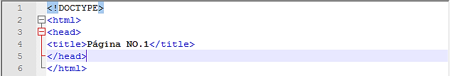
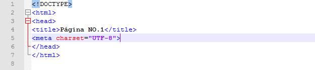
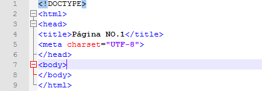
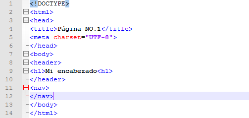
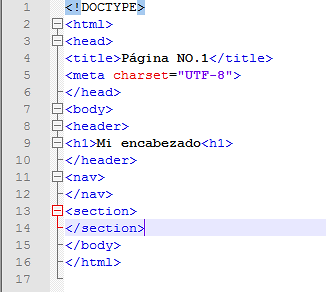

Como estrucurar una página web
Paso 1
Para estructurar una página web debemos aprender el lenguaje de programación llamado HTML.
Entonces usaremos un editor de texto este caso se utilizará Noteppad ++, se puede usar cualquier editor de texto incluso el block de notas de Windows.
Así que se abre el editor de texto.
Paso 2
Se empieza utilizando los signos “<>” o mejor conocidos como mayor que y menor que,
lo que se ponga dentro de estos signos se convertirán en etiquetas que le ordenaran al lenguaje que hacer,
es mejor buscar listado con los nombres y funciones de cada uno.
Paso 3
Dentro de los signos <> que señalan la creación de una etiqueta,
se escribe“!DOCTYPE HTML”, con esto indicaremos que versión de HTML que se utiliza para crear la página.
Paso 4
Se puede dejar un espacio(Para que el documento este un poco más ordenado) y crear una etiqueta llamada html,
se puede dejar otro espacio y ahora se cierra la etiqueta, será el código fuente de la página web.
Paso 5
Ahora se crea una nueva etiqueta llamada “head”, dentro de la etiqueta html, head no se mira en la página web,
pero aquí se posiciona el título de la página, el juego de caracteres etc.
Paso 6
Dentro de head se crea otra etiqueta llamada “Title”,
esta etiqueta definirá el titulo de la página web,
en otras, palabras como se identificará en el motor de búsqueda.

Nota
No te confundas, el titulo de la página es el nombre de la pestaña de tu navegador no el titulo que aparece en la página web.
Paso 7
También dentro de la etique head se crea la etiqueta meta (al igual que la etiqueta ¡DOCTYPE no se cierra.) se agrega un atributo llamado “charset” y con el valor “UTF-8”, esto será el juego de caracteres,
esto se usa ya que la letra “ñ” , es única del español y no está en otros idiomas entonces el navegador no lo leerá.

Nota
Los atributos son palabras esenciales y se usan para modificar una función o definir el valor de una etiqueta.
Paso 8
Ahora se empieza con el cuerpo de la página web (La parte visible),
se crea una etiqueta llamada” body” afuera de la etiqueta head pero dentro de la etiqueta html, será el cuerpo de la página web.

Paso 9
Recordando las divisiones en la estructura del prototipado, pueden ser de ayudar,
la primera sección la página se llamará “Header”, dentro de la etiqueta body se crea la etiqueta header.
Paso 10
Dentro de la etiqueta header se pone el encabezado de la página ya que el título es el nombre con el que encuentra la página en los motores de búsqueda. Se puede empezar colocando una nueva etiqueta llamada “h1”,
que ayuda a diferenciar un título del resto del contenido dentro de esa etiqueta se escribe el texto que se quiera.
Paso 11
En el siguiente punto se utliza la eriqueta "nav", esta etiqueta indica el menú, en el manual que he creado explico como crear un menú dinamico, en este caso
solo se ha colocado la etiqueta sin contenido.

Paso 12
La siguiente parte de la estructura es section, secction es el contenido de la página, por ejemplo, header que es el encabezado tiene el título animales invertebrados,
entonces section será el contenido o la investigación, se coloca la etiqueta section dentro de body y afuera de nav.

Paso 13
Ahora bien, section abarcara todo el contenido, pero dentro de secction se hacen divisiones, por ejemplo si se quiere que un párrafo del contenido sea diferente a otro, creamos la etiqueta “article”,
está etiqueta puede contener párrafos, imágenes, videos etc. Entonces article debe ir dentro de section.
Paso 14
Ahora bien aside, está etiqueta la en mi prototipo la coloqué al lado del contenido principal sin embargo no puede ir siempre allí, aside sirve para dar información, por ejemplo, podemos dejar nuestra página de Facebook par que nos sigan si somos blogueros o cosas similares, también puede ser usado para poner publicidad,
en este caso aside puede ser usado en cualquier parte dentro de body, y después con CSS se le da forma.
Paso 15
Por último debemos se coloca el footer, el footer es el pie de página que muchos no leen, sin embargo aquí se puede poner términos, políticas, etc. Al igual que nav se puede hacer como un menú, entoces solo pondré la etiqueta,
footer se inserta dentro de body, afuera de section y listo ya está estructurada la página.
Codigo Final
 Creación de una página web
Creación de una página web